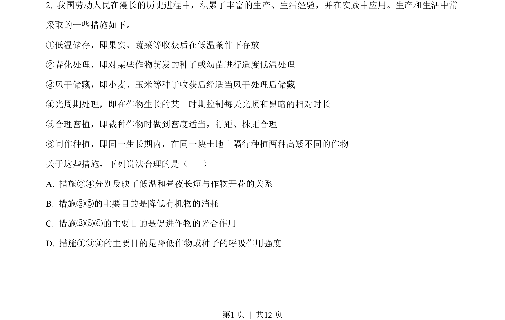
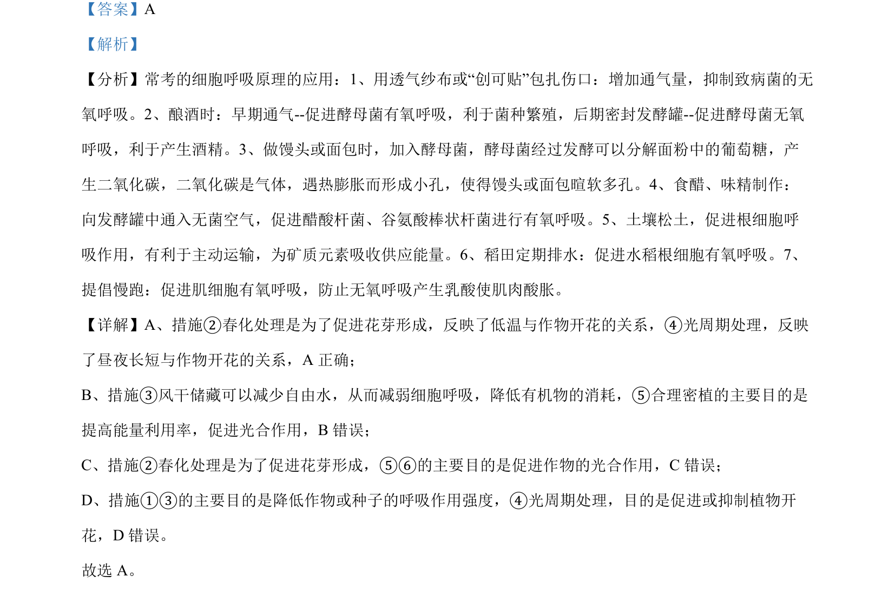

2023-新课标-02
考点：春化作用 光周期 细胞呼吸 光合作用
题面


摘要
农业生产措施与生物学原理的对应，涉及温度、光照对植物开花和代谢的影响
关联考点
答案与解析

📄 原 PDF 第 1 页：
素材/真题/吉林/2008-2024·（吉林）生物高考真题/2023年高考生物试卷（新课标）（解析卷）.pdf
题干文本
- 我国劳动人民在漫长的历史进程中，积累了丰富的生产、生活经验，并在实践中应用。生产和生活中常 采取的一些措施如下。 ①低温储存，即果实、蔬菜等收获后在低温条件下存放 ②春化处理，即对某些作物萌发的种子或幼苗进行适度低温处理 ③风干储藏，即小麦、玉米等种子收获后经适当风干处理后储藏 ④光周期处理，即在作物生长的某一时期控制每天光照和黑暗的相对时长 ⑤合理密植，即裁种作物时做到密度适当，行距、株距合理 ⑥间作种植，即同一生长期内，在同一块土地上隔行种植两种高矮不同的作物 关于这些措施，下列说法合理的是（ ） A. 措施②④分别反映了低温和昼夜长短与作物开花的关系 B. 措施③⑤的主要目的是降低有机物的消耗 C. 措施②⑤⑥的主要目的是促进作物的光合作用 D. 措施①③④的主要目的是降低作物或种子的呼吸作用强度